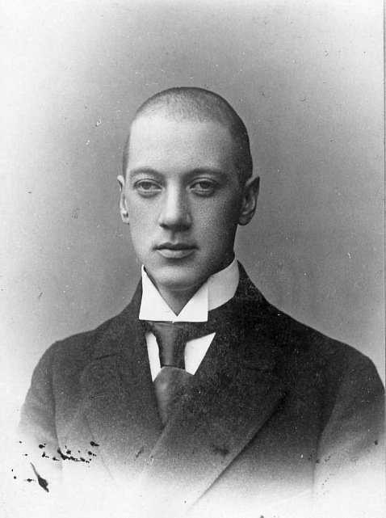

|  |
Н. ГумилёвНиколай Гумилев вошел в историю русской литературы как основатель акмеизма, поэт, переводчик и художественный критик. Он участвовал в Первой мировой войне, получил несколько орденов, много путешествовал. Кроме стихов, в его творческое наследие вошли и этнографические заметки о жизни народов Африки. |